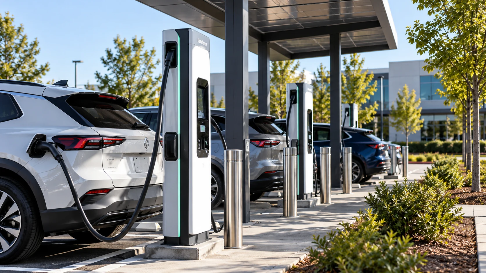

ANSI Flags New Gaps in EV Charging Reliability, Accessibility and Battery Safety
The standards body is focusing on what happens after an electric vehicle reaches a public charger, as well as how damaged batteries are managed and whether charging equipment serves every driver.

A new report from the American National Standards Institute brings attention to some of the less visible obstacles facing electric-vehicle adoption in the United States. The October 30 update tracks work on 30 previously identified standards gaps and proposes three additional areas needing attention: the handling of damaged batteries, accessible charging equipment and the reliability and usability of unattended public chargers. The findings highlight a transition in the EV industry from proving that electric propulsion works to making the broader supporting system dependable for everyday drivers.
The report was issued by ANSI’s Electric Vehicles Standards Panel, or EVSP, a forum that coordinates work among manufacturers, standards organizations, researchers and government participants. ANSI does not operate charging networks, certify that every charger works or directly write all the technical standards under discussion. Its role is to identify areas where coordinated standards, research and conformity-assessment work may be missing. That distinction matters because a standards gap is not proof that a particular company has broken a rule or that a named charging operator is unsafe.
Three problems beyond the charging plug
The first newly proposed gap concerns the triage, monitoring, storage and transfer of damaged EV batteries. Batteries involved in an accident, flood or other harmful event can present different risks from healthy batteries. Responders, vehicle operators, repair facilities and storage businesses need consistent approaches to identifying hazards and managing those components. A coordinated framework can help clarify what information must be collected, when isolation is appropriate and how batteries move safely between responsible parties. The new report identifies the need for further standards work; it does not establish that one universal method is already in force.
The second proposal focuses on accessible and inclusive charging equipment and interfaces. Public charging is not genuinely convenient if a driver cannot reach a connector, understand the screen, operate the payment interface or obtain assistance. Design problems can affect people with disabilities, older users and drivers unfamiliar with a specific charging network. Accessibility is therefore a practical infrastructure question rather than merely a cosmetic design preference. The challenge is complicated by variations in vehicle charging-port locations, cable weight, parking-bay layouts and charger hardware.
The third proposed area addresses the unattended public charging experience, including operations and serviceability. Many public chargers are effectively self-service equipment. Drivers may encounter a machine without staff present, particularly on long-distance trips or outside business hours. A charging session depends on several systems working together: the dispenser, the vehicle, software communication, authorization and sometimes a payment processor. A failure in any one component can prevent the driver from receiving energy even if the hardware appears intact. Charging infrastructure also depends on the power system, a relationship explored in our report on growing electricity demand and grid constraints.
Reliability is a measurable business issue
For charging-network operators, reliability is closely linked to utilization and customer trust. A station that is unavailable produces little or no charging revenue during the outage, while recurring failures can discourage customers from returning. Poor status information can compound the problem by sending drivers to equipment that is temporarily unusable. Standards work around consistent reporting and serviceability may eventually make performance easier to compare, although the report’s proposals are not themselves a new nationwide uptime requirement.
Equipment suppliers also face potential consequences. More consistent technical specifications may simplify design and maintenance across networks, but meeting new or revised requirements can increase development, testing and installation costs. Standards work is often slow because participants must balance reliability, accessibility, affordability and compatibility with vehicles already on the road. The practical effect on costs will depend on which organizations turn the identified gaps into specifications and whether regulators or purchasers adopt them.
For automakers, charging experience can influence the appeal of an EV independently of the vehicle’s range. A driver may trust the advertised battery capacity but still hesitate to take a trip if charging reliability is unpredictable. That creates an interdependence between the car industry and infrastructure operators. Better coordination cannot resolve every problem, but it may reduce friction between different equipment designs and service practices.
A roadmap, not an enforcement action
ANSI says the original 2023 EVSP roadmap identified 37 standards gaps across vehicle systems, charging infrastructure, grid integration and cybersecurity, drawing on participation from more than 130 organizations. The October update follows progress on a subset of those earlier issues and adds three proposed topics for further consideration. The next progress report is expected in May 2027. Its purpose is to track work and establish common priorities, not to impose penalties on individual operators.
That makes interpretation especially important. The report should not be presented as a finding that a named charging brand failed an inspection. Nor does an identified gap mean that every charger suffers from the same defect. Operators vary widely in hardware, software and maintenance practices. The value of the report lies in identifying system-wide areas where better common practices may improve outcomes for drivers.
The longer-term economic issue is straightforward. EV adoption depends not only on vehicle prices and battery technology but also on whether charging is reliable, easy to use and available to a broad population. Standards can create a common language for testing and service expectations; successful implementation then requires investment, operational discipline and clear accountability. ANSI’s new priorities suggest the industry’s next phase will be judged as much by the ordinary experience of using chargers as by the engineering specifications printed on them.